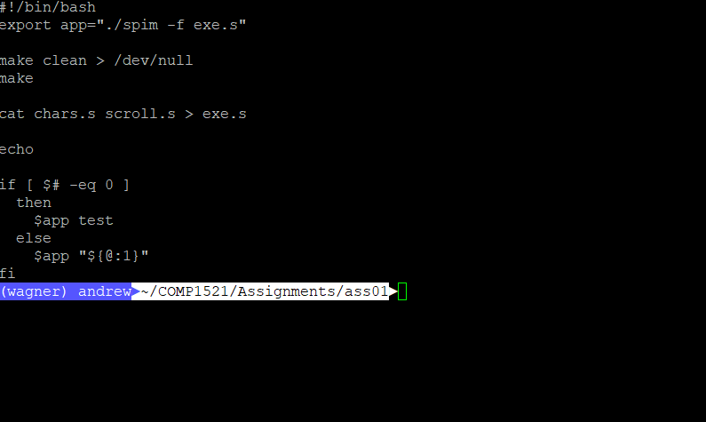

Assignment 1 - Scrolling Text (MIPS)
Contents
First assignment for COMP1521 2018s2! [View Files Here]
Task
This assignment was to write a scrolling display program in MIPS. We were meant to ‘translate’ the supplied working C code into its MIPS assembly equivalent, but I missed that piece of information and dived right into the assignment.
The starting MIPS code, was… convoluted…
Comparing the provided isLower function, the isUpper function I wrote is about 66% shorter.
So in a sense, it comforts me that I wasn’t translating the provided C code.
I had to think through how to write the program, instead of blindly just converting line by line.
This way, I actually thoroughly understand how the program works.
What I've learnt
Read the assignment outline
I completed the assignment by effectively writing and implementing my functions all from scratch.
And then I realised that we were meant to translate the given C code into MIPS.
oh.
It’s okay though, right!?!? My program works, and that’s all that counts! Plus hey, I (accidentally) gave myself a challenge. Good job Andrew!
.data and .text section order
Had some issues with SPIM spitting out errors about invalid memory addresses or something??? Spent quite some time debugging my code, realising that the code was fine.
It turns out that it’s very important for the .data sections to appear before the .text sections. Otherwise your program will probably crash and give you a hard time.
So after checking the contents of my combined code, I realised that cat *.s didn’t combine the files in the right order
So to force the order, I prepended an increasing number, so my files would load in the order of 1.file.s, 2.file.s, 3.file.s, …
The mul opcode uses LO and HI registers
Okay I should’ve known better, mul is a shortcut to mult
# mul $a, $b, $c
mult $b, $c # MULTiply $b and $c, and store the result in LO
mflo $a # Set $a to the contents of LO
My bigString_populate function wasn’t working because I was trying to get the remainder (HI) from a div instruction after I had performed a mul operation. Fixed that by storing the div HI and LO registers immediately after execution.
QtSpim isn't perfect
QtSpim is a graphical MIPS debugger that helps you understanding what your code is doing.
It didn’t feel very user-friendly as you had to press a few buttons to get the code to run, but after a few mouse clicks I was on my way-ish.
So QtSpim doesn’t work with arguments that have spaces in them.
./how_a_program_should_work A B
# argc = 3
# argv[1] = A
# argv[2] = B
./how_a_program_should_work "A B"
# argc = 2
# argv[1] = A B"
./the_mess_that_is_QtSpim "A B"
# argc = 3
# argv[1] = "A
# argv[2] = B"
what the heck - WHY
Let’s have a look at what’s going on…
Source:
CPU/spim_util.hvoid initialize_stack(const char *command_line) { ... while (*args != '\0') { while (*args != ' ' && *args != '\t' && *args != '\0') args++; ...
Well there’s our issue, line 4 - it’s not handling quoted arguments that have spaces in them. awh.
I could fix that by modifying this section of the code and recompiling QtSpim.
But no thanks.
Closing
This assignment was straight-forward, and I finished it in about 10 hours.
It would have probably taken less time if I looked at the given C code, but
Here’s to finishing the assignment
